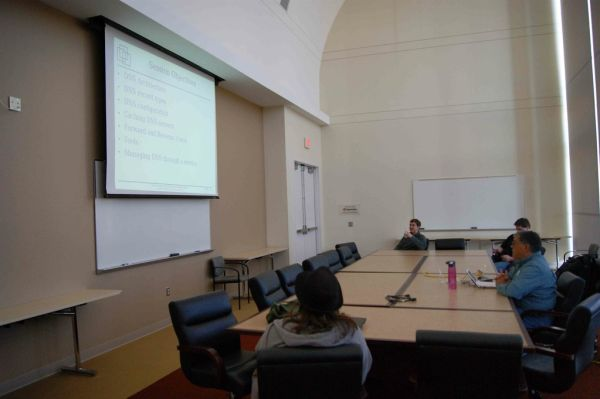
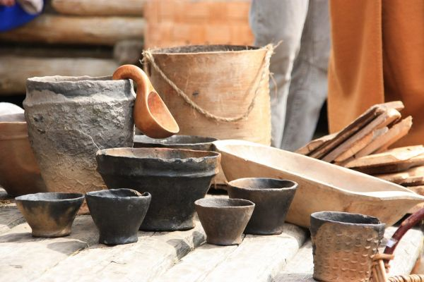
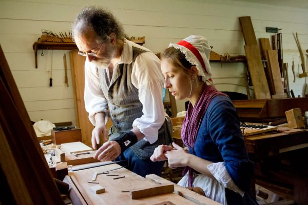
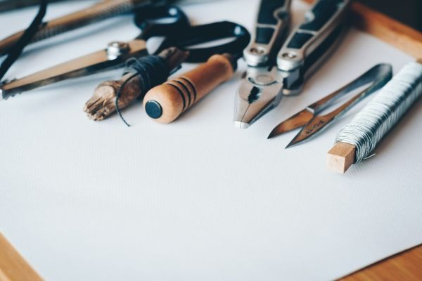
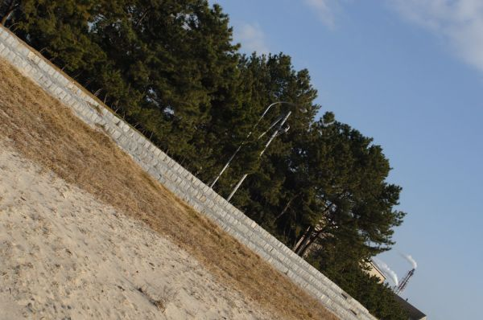
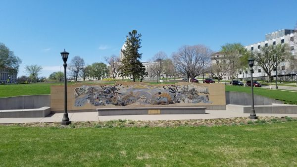
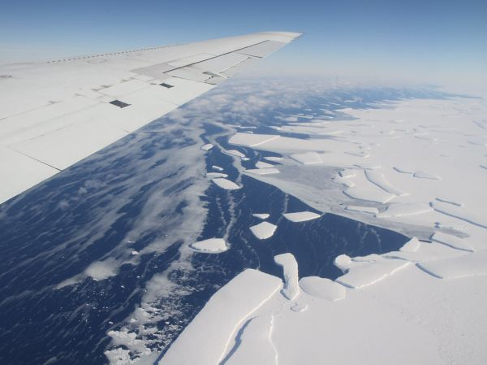
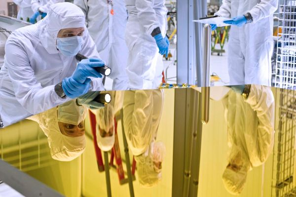

Tiere & Natur DE
Cannabis-Club in Pforzheim wehrt sich erfolgreich gegen zusätzliche Auflagen
Quelle: SWR Aktuell · 26. Oktober 2026 Bild: Floortje Walraven · BY 2.0
PositiveDinge
Diese Seite sammelt aktuelle Meldungen aus deutschen und englischsprachigen Quellen — und behält nur die guten. Jede Nachricht führt ihr Bild, ihre Quelle und den Link zum Original mit.
Ein Teil der Quellen berichtet ohnehin nur über gute Nachrichten. Bei den allgemeinen Nachrichtenquellen entscheidet ein Filter, und zwar bewusst umgekehrt als man zunächst denkt: Nicht das Negative wird ausgesperrt, sondern das Positive muss nachgewiesen werden. Eine reine Sperrliste ließe fast alles durch — die meisten Meldungen sind nämlich neutral, nicht offensichtlich negativ.
In drei Stufen: Zuerst fliegen Formulierungen raus, die gut klingen, aber einen Fehlschlag beschreiben („Rettung gescheitert"). Dann greift eine Sperrliste gegen Gewalt, Unglück und Katastrophen — mit einer Ausnahme für verneinte Formen, denn „ohne Verletzte" ist eine gute Nachricht. Was übrig bleibt, muss Punkte sammeln: positive Wörter im Titel zählen doppelt, negative ziehen ab.
Ehrlich gesagt: Wortlisten können nicht garantieren,
dass nie eine unpassende Meldung durchrutscht. Sie senken die
Trefferquote deutlich, mehr nicht. Deshalb protokolliert jeder Build
jede Entscheidung, und Fehlgriffe lassen sich in
config/overrides.json in Sekunden korrigieren.
Zuletzt gebaut: · 11 von 11 Quellen erreichbar
Zu diesem Thema gibt es gerade nichts.
Tiere & Natur DE
Quelle: SWR Aktuell · 26. Oktober 2026 Bild: Floortje Walraven · BY 2.0

Wirtschaft & Arbeit DE
Quelle: Spiegel · 26. Oktober 2026 Bild: Ruth and Dave · BY 2.0

Tiere & Natur EN
Quelle: Good News Network · 26. Oktober 2026 Illustration

Gesellschaft EN
Quelle: Positive News · 26. Oktober 2026 Illustration

Gesellschaft DE
Quelle: goodnews.eu · 26. Oktober 2026 Bild: KOMUnews · BY 2.0

Tiere & Natur EN
Quelle: Good News Network · 26. Oktober 2026 Bild: Jeremy Davis · BY 2.0

Sport DE
Quelle: Spiegel · 26. Oktober 2026 Bild: Fuzzy Gerdes · BY 2.0

Sport DE
Quelle: SWR Aktuell · 26. Oktober 2026 Bild: bossco · BY 2.0

Wirtschaft & Arbeit DE
Quelle: SWR Aktuell · 26. Oktober 2026 Bild: Ruth and Dave · BY 2.0

Gesellschaft DE
Quelle: Spiegel · 26. Oktober 2026 Bild: Carrotflower Productions International · BY-SA 2.0

Tiere & Natur DE
Quelle: MDR Aktuell · 26. Oktober 2026 Bild: jlodder · BY 2.0

Wirtschaft & Arbeit DE
Quelle: Tagesschau · 26. Oktober 2026 Bild: Liga_Eglite · BY 2.0

Gesellschaft DE
Quelle: Tagesschau · 26. Oktober 2026 Bild: OakleyOriginals · BY 2.0


Wirtschaft & Arbeit DE
Quelle: SWR Aktuell · 26. Oktober 2026 Bild: watts_photos · BY 2.0 auch bei: Tagesschau

Wirtschaft & Arbeit DE
Quelle: SWR Aktuell · 26. Oktober 2026 Bild: Homedust · BY 2.0

Sport DE
Quelle: MDR Aktuell · 26. Oktober 2026 Bild: Hopeless_Wonderer · BY-SA 2.0
Gesellschaft EN
Quelle: Optimist Daily · 26. Oktober 2026 Illustration

Gesellschaft EN
Quelle: Optimist Daily · 26. Oktober 2026 Bild: Artiom Ponkratenko · BY 2.0

Gesellschaft EN
Quelle: Good News Network · 25. Oktober 2026 Bild: Konstantin Leonov · BY 2.0

Wissenschaft & Technik DE

Sport DE
Quelle: SWR Aktuell · 25. Oktober 2026 Bild: Hopeless_Wonderer · BY-SA 2.0
Gesellschaft EN
Quelle: Good News Network · 25. Oktober 2026 Bild: sjpowermac · CC0 1.0
Wissenschaft & Technik EN
Quelle: Good News Network · 24. Oktober 2026 Bild: NASA Hubble · BY 2.0

Gesellschaft EN
Quelle: Good News Network · 24. Oktober 2026 Bild: Joe Passe · BY-SA 2.0

Gesundheit DE
Quelle: goodnews.eu · 24. Oktober 2026 Bild: TheNoxid · BY 2.0

Gesellschaft DE
Quelle: Good News Magazin · 23. Oktober 2026 Bild: Bruno_Caimi · BY 2.0

Kultur EN
Quelle: Reasons to be Cheerful · 23. Oktober 2026 Illustration
Tiere & Natur EN
Quelle: Positive News · 23. Oktober 2026 Illustration

Gesundheit EN
Quelle: Optimist Daily · 23. Oktober 2026 Bild: jurvetson · BY 2.0

Gesellschaft EN
Quelle: Optimist Daily · 23. Oktober 2026 Bild: Bold Frontiers · BY 2.0

Wissenschaft & Technik DE
Quelle: goodnews.eu · 22. Oktober 2026 Bild: UnitedSoybeanBoard · BY 2.0

Umwelt & Klima EN
Quelle: Positive News · 22. Oktober 2026 Bild: Alfred Weidinger · BY 2.0

Sport EN
Quelle: Optimist Daily · 22. Oktober 2026 Bild: NASA Goddard Photo and Video · BY 2.0

Wissenschaft & Technik EN
Quelle: Optimist Daily · 22. Oktober 2026 Illustration

Gesellschaft EN
Quelle: Positive News · 21. Oktober 2026 Bild: juliejordanscott · BY 2.0

Wissenschaft & Technik DE
Quelle: goodnews.eu · 20. Oktober 2026 Bild: NASA Goddard Photo and Video · BY 2.0

Tiere & Natur EN
Quelle: Positive News · 20. Oktober 2026 Bild: USFWS Pacific Southwest Region · PDM 1.0
Gesellschaft DE
Quelle: goodnews.eu · 19. Oktober 2026 Bild: katerha · BY 2.0

Tiere & Natur EN
Quelle: Reasons to be Cheerful · 19. Oktober 2026 Bild: Bernt Rostad · BY 2.0

Tiere & Natur EN
Quelle: Positive News · 19. Oktober 2026 Bild: U. S. Fish and Wildlife Service - Northeast Region · PDM 1.0

Gesundheit DE
Quelle: goodnews.eu · 17. Oktober 2026 Bild: TheNoxid · BY 2.0

Gesellschaft EN
Quelle: Reasons to be Cheerful · 15. Oktober 2026 Bild: ell brown · BY 2.0
Gesellschaft EN
Quelle: Reasons to be Cheerful · 14. Oktober 2026 Illustration
Gesellschaft EN
Quelle: Reasons to be Cheerful · 12. Oktober 2026 Illustration